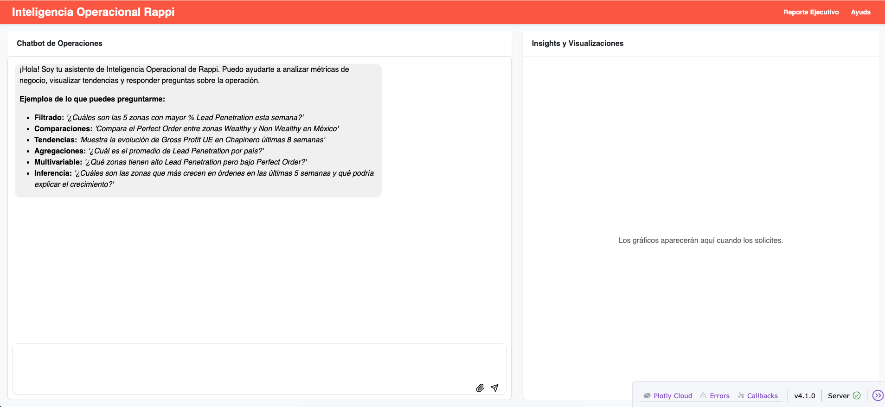
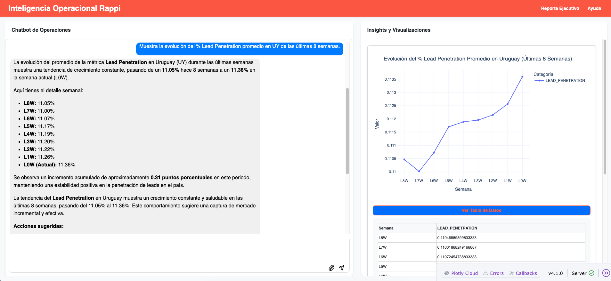
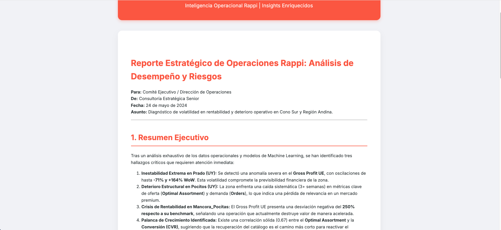

Agente de Operaciones Inteligente de Rappi
Sistema multi-agente de IA para el acceso a datos operativos
Resumen
Un sistema de IA multi-agente diseñado para democratizar el acceso a datos operativos en Rappi. Permite a los equipos de Estrategia, Planificación y Analítica (SP&A) obtener insights profundos, visualizaciones interactivas e informes estratégicos mediante lenguaje natural.
Desarrollado con Google ADK y Gemini 3 Flash, el sistema orquesta múltiples agentes especializados que colaboran para comprender consultas, extraer datos, generar visualizaciones y producir informes accionables.
Este proyecto demuestra una arquitectura de sistemas multi-agente lista para producción y la capacidad de conectar sistemas de datos complejos con stakeholders no técnicos mediante interfaces intuitivas.
Características Clave
- Colaboración Multi-Agente: Agentes especializados en comprensión de consultas, recuperación de datos, visualización y redacción que colaboran para cumplir con las solicitudes de los usuarios.
- Flujo dirigido por Orquestador: Un orquestador centralizado gestiona la interacción entre agentes, asegurando una coordinación fluida y una ejecución eficiente de tareas complejas.
- Interfaz de Lenguaje Natural: Procesamiento de lenguaje natural intuitivo para una interacción fluida con el sistema.
- Acceso a Datos y Visualización: Integración con fuentes de datos internas y capacidad de generar visualizaciones interactivas sobre la marcha.
- Reportes Accionables: Generación de informes estratégicos con insights claros y recomendaciones basadas en los datos y visualizaciones obtenidos.
- Detección de Anomalías: Pipeline de ML para detectar patrones inusuales en los datos y alertar a los responsables cuando las métricas se deterioran.
Tecnologías
Galería


